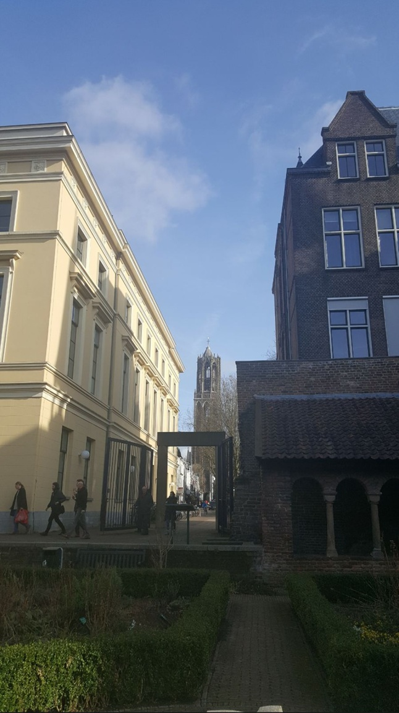

I know we’ve all heard inspirational stories and about people that overcome challenges to meet an incredible goal. This is not going to be one of those stories. Garrett grew up, as one does, just like any other kid, went to school, made friends, played sports, just was a kid in general. All through school he was in band, playing drums, and in high school he met the love of his life, although he didn’t know it yet. After high school, he moved into an apartment and learned a lot about life in that first year. As time went on, Garrett was able to attempt to go back to school, get in tremendous debt, and have nothing to show for it. Luckily, he’s always been able to hold down a decent job, at least for the period, so although money was tight, there was money. Until there wasn’t. After losing a full-time position he fell on hard times and moved back in with his parents. He was lucky enough that they didn’t charge rent or food, so he was able to get his head back above water after finding a job working at a help desk. Eventually finding a place he can afford, he moved into the city and has even bought a house since then. Since he does have some leisure time now, he can typically be found playing video games or hanging out with friends with a boardgame between them. Since his very first apartment he was also lucky enough to find his partner for the rest of time. They have been together since the very beginning and through all the ups and downs that life can throw at them and are currently loving life together.
